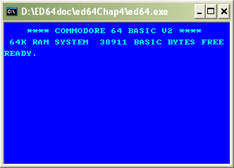

ED64 - HOW TO WRITE A
COMMODORE 64 EMULATOR
Copyright 2006 by ir. Marc Dendooven
Chapter 4 : Adding Input and
Output
Introduction
In Chapter 1 we created a simple emulator model an implemented it. In Chapter 2 we added the instruction set of the processor and created a working emulator of a 6510 microprocessor.
In Chapter 3 we added the kernal rom and the basic rom which contain the operating sytem and the basic interpreter.
Now we will add minimal input and output. At the end of this chapter, we will obtain a working (minimal) emulator.
Text output.
Introduction.
The commodore 64 had, for his time, very good graphics. High resolution, color, sprites, etc… For the moment we will only emulate text output the way the c64 works when switched on.
Switching of the trace
Since we will send text to the screen we should turn of the trace. Otherwise both textstreams will garble up with each other. You can change all the trace code in comments in the code to speed up the emulator.
Emulation model
Graphics on the c64 is handled by the VIC chip. The VIC works autonomous from the rest of the system to generate a video signal. To now what to display, the VIC shares the memory with the processor and can look into the memory. This is hard to emulate. Here we will emulate the user model: when a poke occurred between address 1024 and 2023 decimal ($400 and $7E7), a character is displayed on the screen.
Implementation
This can be done by implementing the poke events the same way we did with the peeks. Assuming we have a procedure ‘vicText’ witch displays a char at a screen position:
procedure poke(address : word ;
value : byte);
begin
ram[address] := value;
case address of
$400..$7E7 :
vicText(address-$400,value)
end
end;
remark that the poke is not replaced by this action (like in the peek), but is added to it.
In FreePascal we will use the CRT library unit to use textio. This library has a procedure gotoXY to position text on the screen.
procedure vicText(pos: word; val:
byte);
begin
gotoXY((pos mod 40)+1,(pos
div 40)+1);
write(charset[val])
end;
since the c64 doesn’t use ascii for it’s text, we will use a conversion table (simply an array with the c64 characters). Since not all the c64 characters exist in a standard font, we will use a reduced set.
To use inversed characters, we can extend vicText to:
procedure vicText(pos: word; val:
byte);
begin
gotoXY((pos mod 40)+1,(pos
div 40)+1);
if val < $80 then begin
textAttr:=$9B;
write(charset[val])
end
else begin
textAttr:=$B9;
write(charset[val-$80])
end
end;
the value of textAttr contains the for- and background color to be used. The values used are lightblue and lightcyan, an aproximation of the startcolours of the C64.
See vic.pas for the complete implementation.
Conclusion
When we execute the program, we see the starting screen of a C64. If you want you can change the parameters (font, number of lines or colums) of your console to add more look and feel of a real c64)

Example 40x25, 8x8 fonts on windows XP. Also the 16 x 12 font gives a good look.
Keyboard input.
Introduction
Keyboard input happens the following way: 50 times in a second an interrupt is generated. The standard IRQ routine scans the keyboard through one of the CIA's (Complex interface Adaptor), and, if a key is pressed, puts the character in the keyboard buffer. None of this items have been emulated. But we could take a shortcut. What if we write a small program that reads the keyboard, and if a key is pressed, puts that key straight in the keyboard buffer ?
Writing in the keyboard buffer
The keyboard buffer can be found at location $0277, and is 10 bytes long. The nr of items in the buffer is stored at location $C6. With the CRT unit the keyboard can be read. The following procedure adds a key to the keyboardbuffer.
procedure addkey;
var buff,ch : byte;
begin
buff := peek($C6);
if buff < 10 then
begin
ch :=
ord(upcase(readkey));
poke($0277+buff,ch);
poke($C6,buff+1)
end
end;
And we can call this procedure from the main loop when a key is pressed :
if keypressed then addkey
A working emulator !
At last we have a usable emulator! Type in some basic programs to test them out !
Optimisations
Emulator speed
You will have remarked at the startupsequence that the emulator has slowed down a lot. Indeed we test the keyboard every emulator turn. That is not necessary. We will add a counter. The counter is decremented each loop en only when reached zero the keyboard is tested.
var count: word;
...
dec(count);
if count=0 then
if keypressed then addkey
...
Now the emulator is much faster.
since count is a word, the keyboard is checked only every 2^16 = 65536 loops. This gives an idea of the emulator speed. If on your computer this is too slow, you can take a lesser value by resetting the counter to a preset value when the counter reaches zero.
The cursor
You might have noticed that the cursor is not on the right place. This is because the cursor is not the c64 cursor, but the cursor of the console. Since the c64 cursor is treated by the interrupt routine, it is not updated here. We will set it on the correct place each time count reaches zero. (addresses 211 en 214 holds the cursor position)
if count=0 then
begin
if keypressed
then addkey;
gotoXY(peek(211)+1,peek(214)+1)
end
By specifying
cursorBig;
We add to the c64 look and feel.
Conclusions
We added keyboard access in a few lines, but we did something very ugly: our program emulated not only hardware, but also software (the standard IRQ routine). If a c64 program tries to replace this routine, this won't work ! Using the cursor of the CRT unit is also bad: if we should use another implementation of the VIC (in High Resolution e.g.), we will have no cursor. At last the c64 timer (the variables TIME and TIME$) will not work, since they are also updated by the interrupt routine.
Loading and saving programs.
Now we can enter programs in ED64. But that is not very usefull if we can not save and reload them. We added some routines to save and load programs (with .prg extention) immediately to memory. The first two bytes in a .prg file are the address where the program should be loaded. If the boolean 'basic' equals true this is bytes are ignored and the program is loaded in the basis area.
procedure load_prg (filename :
string ; basic : boolean);
var f : file of byte;
b : byte;
address : word;
begin
{$i-}
assign (f,filename);
reset(f);
{$i+}
if ioresult <> 0
then
writeln('No
file
named ',filename)
else
begin
read(f,b);
address := b;
read(f,b);
address :=
address + b*256;
if basic then
address := 2048;
while not eof(f)
do
begin
read(f,b);
poke(address,b);
inc(address)
end;
close(f);
poke
($2D,lo(address));
poke
($2E,hi(address));
PC := $A52A
end;
end;
procedure save_prg (filename :
string ; from_address,to_address : word);
var f : file of byte;
i : word;
begin
assign (f,filename);
rewrite(f);
write(f,lo(from_address));
write(f,hi(from_address));
for i := from_address to
to_address do write(f,peek(i));
close(f)
end;
Conclusions
In this chapter we made a working C64
emulator. A program 'sin.prg' is added. Try it
out or write some of
your own programs.
code: ed64.pas, memio.pas, vic.pas